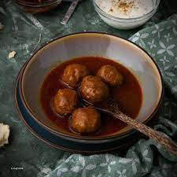

Rista

Description
Kashmir is full of wonders. It is very well known for its delicious
dishes. One of most original dishes is Kashmiri Rista.
It is a type of Kashmiri meatball dish and has a circular shape.
Ingredients:
- Mutton (You can use beef or chicken as well)
- Saffron
- Mawal (Cockscomb Flower)
- Meat masala
Steps:
- Grind meat using an electron grinder
- While grinding add eggs to it as well
- Add Saffron and Mawal
- Add meat masala
- Mix everything thoroughly
- Create cricular meat balls
- Cook for at least 30 minutes